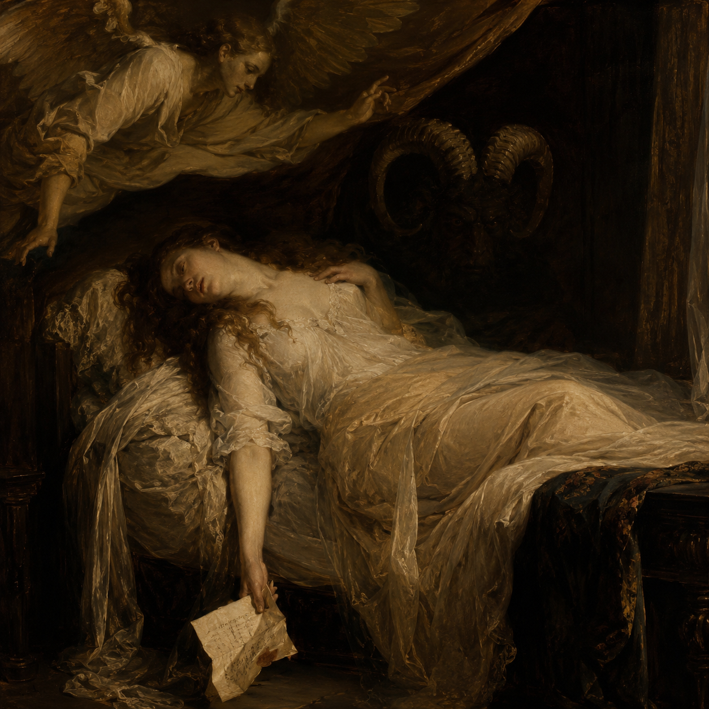

目前能找到的相關描述，多半可以追溯至地方傳說，而非正式的宗教或自然史文獻。其中最早的幾份紀錄被認為來自歐洲各地流傳的睡眠怪談，內容通常與「人在睡夢中突然感到強烈恐懼」或「醒來後異常疲憊」有關。
後來的手稿作者與小說家可能將這些互不相關的故事重新整理，逐漸形成今日所稱的「Dream Devourer」形象。因此，不同年代的資料之間存在相當大的差異。

「噬夢魔」（Dream Devourer）是一種僅存在於少數地方傳說、舊手稿與個人紀錄中的未知生物。目前沒有足夠證據能確認其是否真實存在。
目前較常被引用的說法，是噬夢魔並非真正「吞食夢境」，而是以夢境中產生的強烈情緒作為能量來源。興奮、喜悅、恐懼、悲傷與憤怒等情緒皆可能成為其攝食對象。
「噬夢魔」這個名稱本身很可能來自後世對相關傳聞的統稱。早期地方故事中的名稱並不一致，有些紀錄僅稱其為「夢獸」、「夜行者」或「睡者身旁的東西」。
目前能找到的相關描述，多半可以追溯至地方傳說，而非正式的宗教或自然史文獻。其中最早的幾份紀錄被認為來自歐洲各地流傳的睡眠怪談，內容通常與「人在睡夢中突然感到強烈恐懼」或「醒來後異常疲憊」有關。
後來的手稿作者與小說家可能將這些互不相關的故事重新整理，逐漸形成今日所稱的「Dream Devourer」形象。因此，不同年代的資料之間存在相當大的差異。
關於外觀的紀錄可信度極低，不同地區甚至出現完全不同的描述。以下三幅圖像分別來自地方傳說、小說與古老怪物誌，彼此並無直接關聯，也無法證明其中任何一幅描繪的生物就是噬夢魔。


「吃夢」可能是最常見、也最容易造成誤解的描述。少量觀察紀錄則提出，噬夢魔真正需要的可能不是夢境本身，而是夢境中的強烈情緒。
據稱噬夢魔可以在生物清醒時，使其在毫無察覺的情況下進入夢境。進入後，夢境通常會偽裝得與現實非常相似，因此當事人往往不知道自己已經睡著。
夢中的人物、場所與事件可以與現實高度一致。部分紀錄稱，噬夢魔會自然出現在其中，並透過場景、人物與事件誘發強烈情緒。
目前較一致的說法是：當夢境主人真正意識到自己正在做夢，並主動嘗試醒來時，噬夢魔無法阻止其清醒。
有一份未署名研究筆記曾嘗試將噬夢魔的能力分為三階。這套分類沒有經過正式驗證，甚至無法確定三階是否真的代表固定的生物階段。以下僅保留目前較常被提及的說法。
下圖為 1997 年冬季一名林務人員提供的照片副本。原始照片據稱是在 Oakley 郊外森林拍攝，但照片本身幾乎沒有可辨識內容。

另一份手寫筆記則記錄：「半夜聽見像人在笑的聲音，回頭什麼都沒有。」這類描述在地方傳聞中相當常見，但沒有任何方式證明與噬夢魔有關。